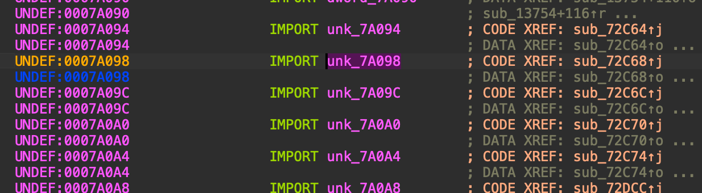
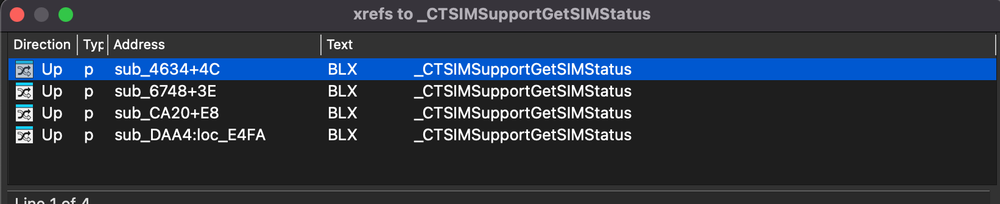
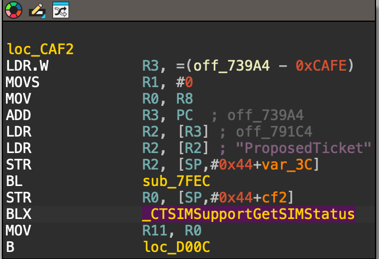

How to patch lockdownd (on device SIM require)
Tuanem
This article is intended for research and learning purposes.Introduction
I’ve always been curious about the mechanics of 'hacktivation' on A4 and older devices, especially since they required a valid SIM to pass the setup. It’s a huge pain for SIM-locked units. I decided to dig into the sn0wbreeze source code and finally saw how they patched lockdownd to bypass the activation. It's fascinating how simple yet effective those early patches were.Prepare
Since I'm quite familiar with using IDA Pro for patching.I'll be using it in this article. Put the device into SSHRD (which most people probably know how to do), then download the lockdownd file. PATH: /mnt1/usr/libexec/lockdowndPatch Lockdownd
first open lockdownd with IDA pro,then select View -> Open -> Subviews -> Import Now we need to find an exotic function it is SIM check function named Keep scrolling down until you see a function like the one in the image.
Proceed with patching
Now double click on the _CTSIMSupportGetSIMStatus function,IDA will take you here.
Now right click , select Jump to xref to operand A list will appear, listing all the places in the code that are calling this function For me there will be 4 columns to look for in this list.
When you find the MOV R11, R0em> section located right below the BLX sub_72C68instruction,that address is where the patch need Try clicking on each column one by one until you find the desired result, if you did it correctly it should look like this. You should also search for factory activation to find its offset,just use the search function in IDA
Then calculate the distance from the BL command to that location
I have already calculated this here ( on iPhone 4 ios 4.3.3)
Now focus on the function that needs patching BL sub_146B4 and put the cursor before BL,then replace the first 4 bytes -> 7D E2 00 00
The result will look like this.
You should also search for factory activation to find its offset,just use the search function in IDA
Then calculate the distance from the BL command to that location
I have already calculated this here ( on iPhone 4 ios 4.3.3)
Now focus on the function that needs patching BL sub_146B4 and put the cursor before BL,then replace the first 4 bytes -> 7D E2 00 00
The result will look like this.

Apply the patch, then put the device into SSHRD and place lockdownd patched in the correct path, don't forget chmod +x